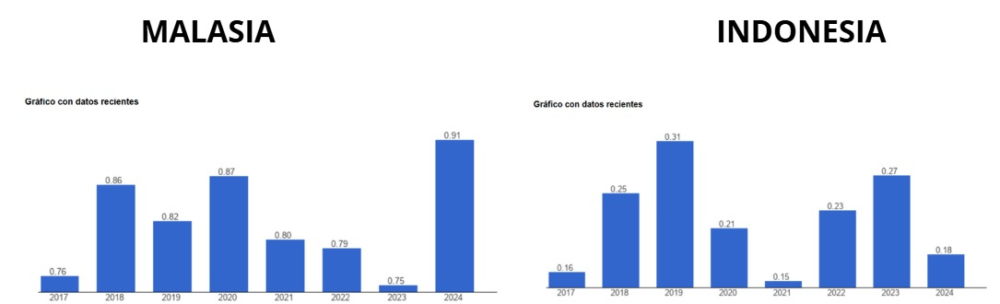
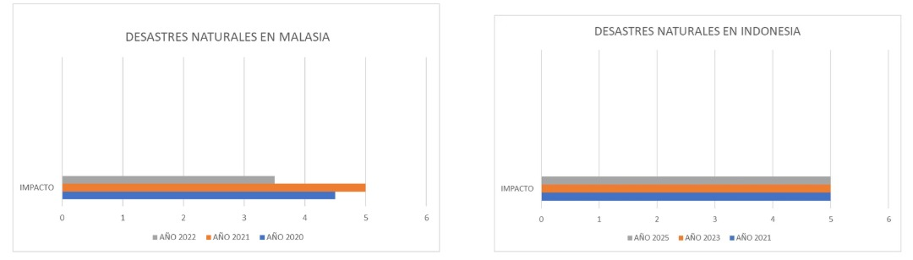

Indonesia y Malasia presentan una fuerte influencia del islam en su cultura y comportamiento social. Indonesia tiene una población musulmana del 87,1%, mientras que en Malasia el islam suní representa el 63,5%, acompañado de mayor diversidad religiosa como budismo y cristianismo. La religión influye directamente en hábitos de consumo, normas sociales y decisiones comerciales, especialmente en temas relacionados con servicios financieros y seguros.
Para ASOCAVAL, comprender estas creencias es fundamental para adaptar la comunicación y generar confianza en el mercado. En ambos países, el respeto por normas culturales y religiosas puede facilitar relaciones comerciales y aceptación de los servicios. Sin embargo, Indonesia exige mayor adaptación debido a su homogeneidad religiosa, mientras Malasia ofrece un entorno más diverso y flexible.
Malasia:★★★★★Indonesia:★★★★☆
Idioma
El idioma oficial de Malasia es el malayo, mientras que en Indonesia se utiliza el indonesio, lengua derivada del malayo. Aunque ambos idiomas son similares, existen diferencias culturales y lingüísticas que influyen en la comunicación empresarial y comercial. En Malasia el inglés tiene una presencia más amplia en negocios y servicios internacionales, facilitando las relaciones con empresas extranjeras.
Para Asocaval, la similitud entre ambos idiomas representa una ventaja para adaptar estrategias comerciales en los dos mercados con menores costos de traducción y comunicación. Sin embargo, Malasia ofrece un entorno más favorable debido al mayor uso del inglés, lo que facilita negociaciones, publicidad y atención al cliente internacional. En Indonesia puede requerirse una adaptación más específica del lenguaje y contenido comercial para generar confianza en el consumidor local.
Malasia:★★★★★Indonesia:★★★★☆
Crecimiento poblacional
Malasia presenta un crecimiento poblacional estable cercano al 1,2% entre 2021 y 2024, mientras Indonesia registra niveles menores entre 0,7% y 0,8%. Esto indica que Malasia mantiene una expansión demográfica más constante, lo que favorece el aumento gradual de consumidores y fuerza laboral. Indonesia, aunque tiene un crecimiento más bajo, continúa siendo un mercado amplio por el tamaño total de su población.
Para Asocaval, un crecimiento poblacional estable representa mayores oportunidades de ampliar la demanda de servicios y fortalecer la presencia en el mercado a largo plazo. Malasia ofrece mejores perspectivas de crecimiento sostenido del mercado, mientras Indonesia puede requerir estrategias más enfocadas en segmentos específicos debido a su desaceleración demográfica. Sin embargo, ambos países mantienen potencial comercial por el tamaño y dinamismo de sus economías.
Malasia:★★★★★Indonesia:★★★★☆
Entorno Político y Legal
Eficiencia Gubernamental

La Eficiencia Gubernamental evalúa la calidad de los servicios públicos y la credibilidad de las políticas de Estado. Malasia mantiene un desempeño superior y consolidado, mientras Indonesia muestra la mejora más acelerada de la región.
Para ASOCAVAL, esta comparativa define su estrategia: Malasia ofrece un entorno de alta predictibilidad para establecer un "hub" logístico, facilitando la validación ágil de certificaciones orgánicas. En Indonesia, la creciente eficiencia reduce progresivamente las barreras burocráticas y costos ocultos en aduanas. Para la asociación de Valdivia, contar con gobiernos efectivos en ambos destinos garantiza que el cacao "fino y de aroma" no sufra deterioros por trámites lentos. Esta solidez institucional protege el esfuerzo de las 74 familias, asegurando que el cumplimiento de los estándares de Comercio Justo sea reconocido y procesado sin trabas administrativas en el mercado asiático.
Malasia:★★★★★Indonesia:★★★★☆
Desastres Naturales WORLD RISK INDEX

El World Risk Index (WRI) evalúa el riesgo de desastres mediante la exposición a amenazas naturales y la capacidad institucional de respuesta. Indonesia presenta una exposición muy alta debido a su actividad sísmica y monzones, mientras que Malasia enfrenta un riesgo medio-alto concentrado en inundaciones estacionales.
Para ASOCAVAL, este panorama exige una logística preventiva: el cacao "fino y de aroma" de Valdivia es vulnerable a la humedad extrema derivada de estos fenómenos. No obstante, la alta capacidad de respuesta en ambos países, especialmente la infraestructura resiliente de Malasia, mitiga el riesgo de pérdida de calidad. Para las 74 familias de la asociación, esto implica que, aunque existen amenazas ambientales, los puertos en estos destinos están preparados para mantener la continuidad operativa. La estrategia de internacionalización debe priorizar el almacenamiento en zonas seguras para preservar las certificaciones orgánicas y de Comercio Justo frente a contingencias climáticas.
Malasia:★★★★☆Indonesia:★★★☆☆
Crecimiento poblacional
Entorno Tecnológico y Geoambiental
Usuarios de internet y conectividad digital
Malasia presenta altos niveles de conectividad digital, pasando de aproximadamente 90% de usuarios de internet en 2020 a cerca del 98% en 2024. Indonesia muestra un crecimiento importante, aumentando de 54% a 73% en el mismo periodo. Esto evidencia que ambos países avanzan en digitalización, aunque Malasia mantiene una infraestructura tecnológica y acceso a internet más desarrollado.
Para Asocaval, una mayor conectividad facilita estrategias digitales, promoción de servicios, comunicación con clientes y procesos en línea. Malasia ofrece un entorno más favorable para implementar plataformas digitales y ampliar cobertura comercial con menor dificultad, Indonesia representa una oportunidad de crecimiento debido al aumento acelerado de usuarios digitales, aunque todavía existen limitaciones de acceso en algunas zonas.
Malasia:★★★★★Indonesia:★★★★☆
Ubicación
Malasia e Indonesia se encuentran en el sudeste asiático, una región estratégica para el comercio internacional por su conexión con mercados como China, India y Japón. Sin embargo, al exportar desde Colombia, la distancia geográfica representa mayores tiempos y costos logísticos en comparación con mercados más cercanos. Indonesia, al ser un archipiélago, puede generar mayores dificultades de distribución interna y transporte entre islas. Malasia, por su ubicación más conectada con rutas comerciales internacionales, facilita la movilidad de mercancías y el acceso a puertos estratégicos.
Para Asocaval, la ubicación de ambos países ofrece acceso a un mercado asiático amplio y en crecimiento. No obstante, Malasia presenta ventajas logísticas y de conectividad que reducen costos operativos y facilitan la entrada comercial. Indonesia ofrece un mercado grande, pero con mayores retos de distribución y coordinación logística.
Malasia:★★★★★Indonesia:★★★★☆
Clima
Malasia e Indonesia presentan climas tropicales con temperaturas cálidas durante todo el año, entre 22 °C y 33 °C. Estas condiciones favorecen actividades comerciales continuas y reducen riesgos asociados a cambios extremos de clima. Sin embargo, ambos países registran altos niveles de humedad y temporadas de lluvias intensas, especialmente Indonesia por su clima tropical ecuatorial.
Para Asocaval, el clima no representa una barrera fuerte para la exportación de servicios, pero sí puede influir en operaciones logísticas y transporte. Las lluvias intensas o fenómenos climáticos pueden generar retrasos en movilidad y distribución. Malasia presenta condiciones ligeramente más estables y predecibles, facilitando la operación comercial. Indonesia, aunque mantiene un clima similar, puede enfrentar mayores dificultades por su geografía insular y lluvias frecuentes.
Malasia:★★★★★Indonesia:★★★★☆
Entorno de Comercio Internacional
Evolución de la balanza comercial entre Colombia y los países seleccionados
El indicador de balanza comercial muestra la diferencia entre exportaciones e importaciones entre Colombia y los países analizados, permitiendo evaluar el nivel de intercambio comercial y oportunidades de mercado. Según la gráfica, tanto con Malasia como con Indonesia existe una dinámica comercial creciente entre 2020 y 2022, aunque posteriormente se observa una desaceleración, especialmente con Malasia. Indonesia mantiene un comportamiento más estable hacia 2024, lo que evidencia una relación comercial más sólida y sostenible. Para ASOCAVAL, este entorno es relevante porque refleja oportunidades para exportar cacao y derivados hacia mercados asiáticos con demanda creciente de productos agrícolas y sostenibles. Además, una balanza comercial activa facilita alianzas, acceso a compradores internacionales y expansión comercial. Sin embargo, la disminución posterior a 2022 evidencia riesgos asociados a cambios económicos y competencia internacional.
Malasia:★★★★☆Indonesia:★★★★☆
Indicador de desempeño logístico
El Índice de Desempeño Logístico (LPI) evalúa la eficiencia de un país en infraestructura, transporte, aduanas y tiempos de entrega para el comercio internacional. Según la gráfica, Malasia presenta un desempeño logístico superior y más estable que Indonesia, con puntajes cercanos a 3,5, mientras Indonesia mantiene niveles moderados alrededor de 3,0. Además, ambos países cuentan con puertos y aeropuertos estratégicos que facilitan el comercio global, especialmente con Asia y Estados Unidos. Para ASOCAVAL, este indicador es clave porque una logística eficiente reduce costos, tiempos de entrega y riesgos en exportaciones de cacao. Malasia ofrece mayores ventajas competitivas por su infraestructura más desarrollada, mientras Indonesia representa una alternativa importante por su conectividad regional y cercanía a mercados asiáticos. En general, el entorno logístico favorece el proceso de internacionalización de la empresa.
Malasia:★★★★★Indonesia:★★★★☆
Acuerdos comerciales
El indicador de acuerdos comerciales muestra el nivel de cooperación económica entre países y las facilidades para el intercambio internacional de bienes y servicios. Según la gráfica, Colombia y Malasia cuentan con un acuerdo comercial vigente desde 1995, lo que favorece las relaciones económicas y comerciales entre ambos países. Este tipo de acuerdos facilita procesos de exportación, reduce barreras comerciales y genera mayor seguridad jurídica para las empresas. Para ASOCAVAL, representa una ventaja importante en su proceso de internacionalización, ya que podría facilitar el ingreso de cacao y derivados al mercado asiático con menores obstáculos comerciales y mayores oportunidades de negocio
Malasia:★★★★★Indonesia:★★★☆☆
Entorno de inversión Extranjera
Flujos de inversión
El indicador de flujos de inversión muestra que Indonesia y Malasia son socios clave para mover negocios y productos a nivel mundial. En el gráfico de Indonesia, se nota una relación comercial fuerte donde el cacao ya es el segundo producto que más nos compran ($4,33M), lo que nos da la seguridad de que ya conocen y confían en nuestro grano. Por otro lado, Malasia invierte mucho en tecnología para procesar alimentos, buscando siempre materia prima de alta calidad. Para ASOCAVAL, esto es una oportunidad de oro: aprovechamos que ellos ya están metiendo dinero en sus propias fábricas para venderles nuestro cacao certificado. Mientras Indonesia nos ofrece más movimiento y rutas de transporte claras, Malasia es un mercado más exclusivo. Ambos países nos abren las puertas para crecer fuera de Colombia y conectar nuestro trabajo con compradores que valoran el buen cacao.
Malasia:★★★★☆Indonesia:★★★★★
Inversión extranjera directa
El indicador de Inversión Extranjera Directa (IED) muestra cuánta plata y confianza reciben Malasia e Indonesia del exterior. Según la gráfica, Malasia lidera con inversiones más altas y constantes, especialmente en 2021 y 2024, demostrando ser un mercado muy firme para los negocios. Indonesia, aunque es más estable y sin tantos saltos, sigue siendo un destino muy seguro. Para ASOCAVAL, este buen clima económico es clave, ya que significa que ambos países cuentan con recursos y mejores condiciones para comprar nuestro cacao. Aprovechar que estas economías están creciendo y mejorando su infraestructura nos facilita entrar con nuestro grano certificado y asegurar ventas con clientes que tienen buen respaldo financiero. Al final, Malasia ofrece un entorno más dinámico, mientras que Indonesia aporta estabilidad para nuestra expansión.
Malasia:★★★★★Indonesia:★★★★☆
Sectores receptores de inversión
El indicador de Inversión Extranjera Directa (IED) muestra la capacidad de un país para atraer capital internacional hacia sectores productivos estratégicos. Según la gráfica, Indonesia presenta una mayor recepción de inversión extranjera que Malasia, lo que refleja un mercado más atractivo por su tamaño, políticas de incentivo y apertura comercial. Esto impacta positivamente al país al fortalecer infraestructura, innovación y competitividad empresarial. Para ASOCAVAL, este entorno puede favorecer su proceso de internacionalización al facilitar alianzas comerciales, acceso a nuevos mercados y oportunidades de inversión en la cadena del cacao. Sin embargo, también implica enfrentar mayor competencia en un mercado dinámico. En el caso de Malasia, aunque recibe inversión, su escala parece menor. En conjunto, Indonesia representa una oportunidad más favorable para la expansión internacional de la empresa.